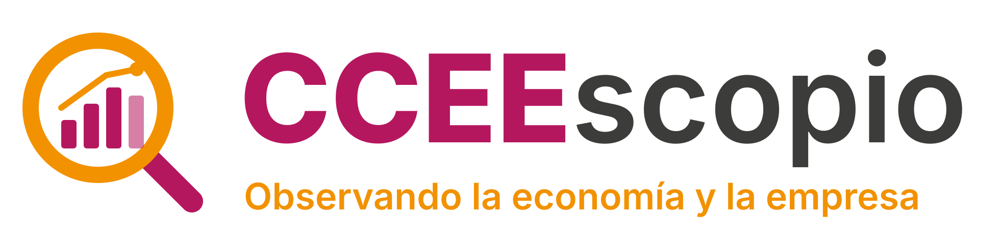

CCEEscopio

CCEEscopio es el observatorio de indicadores económicos y empresariales de la Facultad de Ciencias Económicas y Empresariales de la Universidad de Granada. Reúne en un solo lugar los principales datos de la economía y la empresa (precios, empleo, actividad, innovación, turismo, finanzas públicas, desigualdad y sostenibilidad) para España, Andalucía y los países de la Unión Europea.
Datos oficiales, actualizados y descargables, al servicio de la docencia y la investigación de la Facultad.
CCEEscopio en un minuto
¿Qué encontrarás?
Una herramienta para la docencia y la investigación
Docencia
- Datos reales y actualizados para las clases de Economía, Empresa, Estadística, Econometría, Finanzas y Turismo.
- Gráficos interactivos para explicar conceptos (inflación, ciclo económico, convergencia regional, desigualdad).
- Material para prácticas, TFG y TFM, con datos listos para descargar.
- Ideas de uso en asignaturas
Investigación
- Descarga de los datos en CSV de cada gráfico, con su fuente y unidad, para usarlos en artículos, tesis y proyectos.
- Series oficiales y homogéneas de Eurostat, comparables entre países y regiones.
- Enlaces a microdatos y fuentes especializadas (INE, Banco de España, IECA, Banco Mundial).
- Datos y fuentes
Datos siempre actualizados
Los indicadores se descargan en directo de la API de Eurostat cada vez que se abre una página, de modo que muestran siempre la última publicación oficial. Cada gráfico permite elegir los territorios que se comparan (España, Andalucía, comunidades autónomas y países de la UE), consultar los valores pasando el ratón y descargar los datos en CSV.
Quién lo gestiona
CCEEscopio es una iniciativa de la Facultad de Ciencias Económicas y Empresariales de la Universidad de Granada, gestionada por el Vicedecanato de Investigación, Transferencia y Posgrado. Si quieres proponer nuevos indicadores, colaborar o comunicar un error, escríbenos a investiga_ccee@ugr.es.